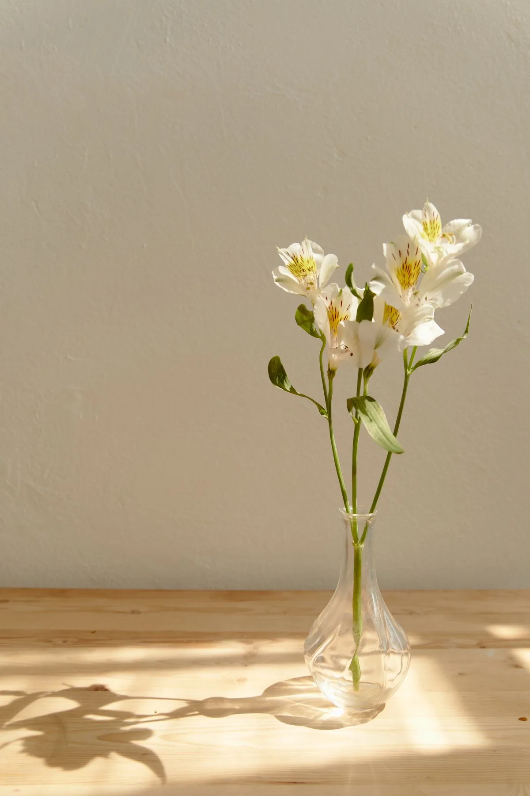

Dọn nhà an toàn cho chó mèo: những thứ cần cất đi trước khi pet khám phá
Tác giả: Nguyễn Trung Đức
Chó và mèo khám phá thế giới bằng mũi và bằng miệng. Một chú chó con sẽ gặm thử mọi thứ nó thấy trên sàn nhà. Một bé mèo tò mò sẽ nhảy lên kệ bếp, chui vào tủ chưa đóng, và cắn thử lá cây cảnh đặt trên bàn. Nhiều thứ trong nhà mà với con người là vô hại — một lọ thuốc, một bó hoa, một sợi dây điện — lại có thể gây nguy hiểm thật sự cho pet.
Bài viết này hướng dẫn bạn dọn nhà theo từng phòng, trước khi pet về nhà hoặc ngay khi bạn phát hiện ra những rủi ro đang có sẵn trong nhà. Các khẳng định về chất độc trong bài đều lấy từ các nguồn: ASPCA (trang về hoa lily), ASPCApro (thức ăn độc) và Banfield (bảng chất độc theo loài). Các lời khuyên dọn dẹp thực hành như cất dây điện hay lắp lưới cửa sổ là những việc bạn có thể làm ngay tại nhà để giảm rủi ro cho pet.
Nguyên tắc đầu tiên: nhìn nhà ở tầm mắt của pet
Trước khi dọn từng phòng, hãy làm một việc đơn giản: quỳ xuống sàn nhà và nhìn quanh ở tầm mắt của chó con hoặc mèo con. Ở tầm này, bạn sẽ thấy những thứ mà khi đứng bạn không để ý: dây sạc điện thoại thòng xuống sau ghế sofa, viên pin nhỏ lăn dưới gầm tủ, túi nilon trong thùng rác không có nắp, lọ thuốc đặt trên bàn thấp, chậu cây cảnh đặt ngay mép bàn.
Pet không biết thứ nào ăn được và thứ nào không. Nhiệm vụ của bạn không phải là dạy pet phân biệt, mà là dọn đi những thứ nguy hiểm trước khi pet có cơ hội chạm vào chúng. Hãy làm việc này trước ngày đón pet về, và lặp lại việc kiểm tra mỗi khi nhà bạn có thêm đồ mới: một bó hoa được tặng, một lọ thuốc mới, một món đồ điện tử mới.
Nhà bếp: thức ăn, thùng rác và đồ sắc nhọn
Nhà bếp là nơi tập trung nhiều rủi ro nhất, vì ở đó có thức ăn, dao kéo, túi nilon và thùng rác. Về thức ăn độc, bài viết này không lặp lại danh sách đầy đủ — bạn có thể đọc kỹ trong Thức ăn của người gây độc cho chó mèo của website này. Điều cần nhớ ở đây là: Thức ăn của người gây độc cho chó mèo không chỉ nằm trong tủ lạnh, mà còn nằm trên bàn ăn, trong túi xách, trong thùng rác, và trong tay khách tới chơi nhà. Một miếng sô-cô-la rơi xuống sàn, một củ hành rơi khỏi thớt, một viên kẹo cao su không đường trong túi áo khoác — tất cả đều có thể trở thành vấn đề nếu pet nhặt được trước bạn.
Thùng rác là một điểm rủi ro lớn mà nhiều người bỏ qua. Chó đặc biệt thích lục thùng rác vì mùi thức ăn thừa. Dùng thùng rác có nắp đậy chắc chắn, hoặc đặt thùng rác sau cánh cửa tủ có khóa chốt. Xương gà, túi nilon đựng thức ăn, bã cà phê và vỏ hành tỏi trong thùng rác đều là những thứ bạn không muốn pet ăn phải.
Dao kéo và đồ sắc nhọn cũng cần được cất vào ngăn kéo có chốt, không để trên mặt bàn thấp hay trong bồn rửa mà pet có thể trèo tới. Với mèo, hãy nhớ rằng mèo có thể nhảy lên mặt bếp và kệ cao, nên "để trên cao" không phải là cách cất an toàn đối với mèo. Gợi ý thực hành: hãy cất dao kéo vào ngăn kéo, và đừng để nồi niêu đang nấu trên bếp mà không có người trông khi pet đang chạy nhảy trong bếp.
Thuốc và hóa chất: cất vào tủ khóa
Thuốc của người cần được cất kỹ, vì chỉ một viên thuốc nhỏ cũng có thể gây hại nghiêm trọng cho chó mèo. Một viên thuốc giảm đau, thuốc cảm, vitamin hay thuốc huyết áp của người có thể gây hại nghiêm trọng cho chó mèo, ngay cả với liều lượng nhỏ đối với con người. Trẻ em trong nhà cũng có thể làm rơi thuốc xuống sàn mà không ai để ý.
Cách làm: cất tất cả thuốc, vitamin và thực phẩm chức năng vào tủ thuốc có khóa hoặc ngăn kéo cao có chốt, không để trên bàn đầu giường, mặt bàn bếp hay trong túi xách đặt dưới sàn. Khi uống thuốc, hãy uống ở nơi pet không tới được, và kiểm tra sàn nhà sau khi uống để chắc chắn không có viên thuốc nào rơi ra. Đừng bao giờ tự cho pet uống thuốc của người khi chưa có hướng dẫn rõ ràng của bác sĩ thú y, vì nhiều loại thuốc an toàn với người lại độc với chó mèo.
Chất tẩy rửa gia đình cũng cần được cất cẩn thận: nước tẩy, nước rửa chén, bột giặt, viên giặt, thuốc diệt côn trùng, thuốc diệt chuột. Gợi ý thực hành: cất các chất này trong tủ có khóa chốt, lau sạch ngay khi bị đổ ra sàn, và đừng để pet đi lại trên sàn vừa lau chất tẩy rửa khi sàn còn ướt. Nếu pet có dấu hiệu bất thường sau khi tiếp xúc với hóa chất — nôn, chảy nước dãi nhiều, mệt lả, khó thở — hãy gọi bác sĩ thú y ngay và mang theo bao bì của sản phẩm để bác sĩ biết pet đã tiếp xúc với chất gì.
Cây cảnh trong nhà: cẩn thận nhất với hoa lily
Cây cảnh là rủi ro mà nhiều người nuôi mèo không ngờ tới, vì một bó hoa đẹp đặt trên bàn ăn có thể là mối nguy hiểm thật sự. Theo trang tra cứu cây độc của ASPCA, hoa lily thuộc loài Lilium là cây ĐỘC với mèo và KHÔNG độc với chó hay ngựa. Dấu hiệu ngộ độc ở mèo là suy thận. Ngay cả một lượng nhỏ — một chiếc lá, hạt phấn hoa dính trên lông rồi mèo liếm phải, hay nước trong bình cắm hoa có lily — cũng có thể gây hại nghiêm trọng cho mèo. Theo Cục Quản lý Thực phẩm và Dược phẩm Hoa Kỳ (FDA), toàn bộ cây lily đều độc với mèo: thân, lá, hoa, hạt phấn và cả nước trong bình cắm hoa; chỉ cần ăn một mẩu lá nhỏ, liếm vài hạt phấn trên lông khi tự chải, hoặc uống nước trong bình cũng có thể khiến mèo suy thận tử vong trong chưa đầy 3 ngày. Nếu bạn nuôi mèo, cách an toàn nhất là không mang bất kỳ hoa lily loài Lilium nào vào nhà, và kiểm tra kỹ mọi bó hoa được tặng xem có lẫn lily hay không.
Ngoài lily, còn nhiều loại cây cảnh phổ biến khác cũng có thể gây hại cho pet, nhưng bài viết này không liệt kê chi tiết từng loại. Nguyên tắc chung mà bạn nên áp dụng: trước khi mang bất kỳ cây cảnh mới nào về nhà, hãy tra cứu tên cây trên trang tra cứu cây độc và không độc của ASPCA, hoặc hỏi bác sĩ thú y. Nếu bạn không chắc một cây có an toàn hay không, hãy đặt cây ở nơi pet hoàn toàn không tới được, hoặc tốt hơn là đừng mang cây đó về nhà.
Với mèo, bạn cũng nên lưu ý rằng mèo hay gặm lá cây vì tò mò hoặc vì muốn nôn ra búi lông. Bài viết gợi ý: nếu bạn muốn có cây xanh trong nhà, hãy chọn những loại cây đã được xác nhận là không độc với pet, đặt chậu cây ở vị trí vững chắc để mèo không hất đổ, và quan sát xem mèo có hay gặm lá hay không trong những ngày đầu đặt cây mới.
Phòng khách và phòng ngủ: dây điện, đồ vật nhỏ và cửa sổ
Phòng khách và phòng ngủ có những rủi ro riêng. Dây điện là một trong số đó: chó con và mèo con hay gặm dây sạc điện thoại, dây đèn, dây tivi. Gợi ý thực hành: rút phích cắm những thiết bị không dùng tới, luồn dây điện sau đồ nội thất, dùng ống bọc dây hoặc kẹp dây để dây không thòng xuống tầm pet với tới. Nếu phát hiện pet đã gặm dây điện và có dấu hiệu bỏng miệng, ho, hoặc khó thở, hãy gọi bác sĩ thú y ngay.
Đồ vật nhỏ cũng là rủi ro thường gặp: dây buộc tóc, đồng xu, pin cúc áo, đồ chơi nhỏ của trẻ em, chỉ và sợi dây. Những thứ này pet có thể nuốt phải và gây tắc ruột. Quét sàn nhanh trước khi rời nhà và để pet ở một mình, cất đồ chơi nhỏ của trẻ em vào hộp có nắp, và đừng để chỉ, ruy-băng hay dây len vương vãi trên sàn vì mèo rất thích chơi và nuốt những thứ này.
Cửa sổ và ban công là rủi ro đặc biệt với mèo. Mèo có thể bị phân tâm bởi chim chóc bên ngoài và ngã khỏi cửa sổ không có lưới chắn. Gợi ý thực hành: lắp lưới chắn cửa sổ chắc chắn và kiểm tra lưới định kỳ, đừng để mèo ra ban công không có lưới bảo vệ, và đóng cửa sổ khi bạn không ở nhà. Với chó, hãy kiểm tra hàng rào sân vườn xem có lỗ hổng nào chó có thể chui qua hay đào qua hay không, và đừng để chó ở sân một mình khi bạn không quan sát được.
Nhà tắm và khu giặt ủi
Nhà tắm có nhiều thứ nguy hiểm trong tầm với của pet: thuốc, mỹ phẩm, nước súc miệng, thuốc nhuộm tóc, dao cạo. Gợi ý thực hành: cất tất cả vào tủ thuốc có khóa, không để trên mặt bồn rửa hay kệ thấp. Bồn tắm và bồn cầu cũng cần lưu ý: đừng để pet uống nước trong bồn cầu vì nước đó có thể chứa chất tẩy rửa, và hãy đậy nắp bồn cầu khi không dùng, đặc biệt với chó con và mèo con nhỏ có thể ngã vào.
Khu giặt ủi có viên giặt và bột giặt, là những chất có thể gây hại nếu pet cắn vỡ hoặc ăn phải. Cất viên giặt và bột giặt trong tủ cao có khóa, đóng cửa máy giặt và máy sấy khi không dùng vì mèo rất thích chui vào những nơi ấm và kín như vậy để ngủ. Trước mỗi lần bật máy giặt, hãy kiểm tra bên trong lồng giặt xem có pet nào đang nằm trong đó hay không — đây là một thói quen đơn giản nhưng có thể cứu mạng mèo nhà bạn.
Sân vườn và gara
Nếu nhà bạn có sân vườn, hãy kiểm tra xem trong sân có cây độc, phân bón, thuốc trừ sâu hay thuốc diệt cỏ hay không. Phân bón và thuốc trừ sâu: cất trong kho có khóa, không để pet ra sân ngay sau khi vừa phun thuốc hoặc rải phân bón, và hỏi rõ thời gian an toàn trên bao bì sản phẩm hoặc hỏi bác sĩ thú y. Nước đọng trong sân sau mưa cũng có thể chứa hóa chất, vì vậy hãy dọn nước đọng và đừng để pet uống nước đọng ngoài sân.
Gara là nơi chứa nhiều chất nguy hiểm nhất trong nhà: nước làm mát động cơ, dầu nhớt, xăng, thuốc diệt chuột, sơn. Chỉ một lượng nhỏ nước làm mát động cơ cũng có thể gây hại nghiêm trọng cho pet vì nó có vị ngọt khiến pet thích liếm. Gợi ý thực hành: lau sạch ngay mọi vết dầu nhớt hay nước làm mát bị đổ ra sàn gara, cất tất cả chai lọ hóa chất trong tủ khóa, và tốt nhất là không cho pet vào gara khi không có người giám sát.
Khi nghi ngờ pet ăn phải chất độc
Dù bạn đã dọn nhà cẩn thận, tai nạn vẫn có thể xảy ra. Điều quan trọng là bạn phải biết mình cần làm gì trong những phút đầu tiên. Nếu bạn thấy pet ăn phải thứ gì đáng ngờ, hoặc pet có dấu hiệu bất thường như nôn nhiều, chảy nước dãi, mệt lả, run rẩy, khó thở hay co giật, hãy gọi bác sĩ thú y hoặc phòng khám cấp cứu thú y gần nhất ngay lập tức. Đừng chờ xem pet có tự khỏi hay không, và đừng tự gây nôn cho pet khi chưa có hướng dẫn của bác sĩ thú y, vì gây nôn sai cách có thể làm tình trạng tệ hơn.
Nếu có thể, hãy mang theo bao bì của thứ pet đã ăn phải, hoặc chụp ảnh lại, để bác sĩ biết chính xác pet đã tiếp xúc với chất gì và liều lượng ước tính là bao nhiêu. Ghi lại thời gian pet ăn phải và những dấu hiệu bạn đã thấy, vì những thông tin này giúp bác sĩ xử lý nhanh và đúng hơn.
Một lưu ý về số điện thoại: ASPCA có đường dây tư vấn độc chất cho pet là (888) 426-4435, và có thể mất phí tư vấn. Đây là số điện thoại của Mỹ. Người nuôi ở Việt Nam nên gọi bác sĩ thú y hoặc phòng khám cấp cứu thú y gần nhất trước, vì đó là nơi có thể tiếp nhận và xử lý trực tiếp cho pet của bạn. Hãy lưu sẵn số điện thoại của bác sĩ thú y và phòng khám cấp cứu gần nhất trong điện thoại, và dán một bản ở tủ lạnh để mọi người trong nhà đều tìm thấy khi cần.
Checklist dọn nhà an toàn theo phòng
| Phòng | Việc cần làm | Đã xong? |
|---|---|---|
| Nhà bếp | Cất thức ăn độc khỏi tầm với; thùng rác có nắp chắc; dao kéo vào ngăn kéo có chốt | ☐ |
| Nhà bếp | Dọn sạch thức ăn rơi vãi trên sàn sau mỗi bữa ăn | ☐ |
| Phòng ngủ, nhà tắm | Thuốc, vitamin cất vào tủ khóa, không để trên bàn đầu giường hay mặt bồn rửa | ☐ |
| Cả nhà | Kiểm tra cây cảnh: không mang hoa lily loài Lilium vào nhà nếu nuôi mèo; tra cứu cây mới trước khi mang về | ☐ |
| Phòng khách | Bọc hoặc luồn dây điện sau đồ nội thất; rút phích thiết bị không dùng | ☐ |
| Phòng khách, phòng ngủ | Quét sàn, cất đồ vật nhỏ (dây buộc tóc, pin, đồng xu, chỉ, ruy-băng) | ☐ |
| Cửa sổ, ban công | Lắp lưới chắn chắc chắn, kiểm tra lưới định kỳ | ☐ |
| Nhà tắm | Đậy nắp bồn cầu; cất mỹ phẩm và chất tẩy rửa vào tủ khóa | ☐ |
| Khu giặt ủi | Cất viên giặt, bột giặt vào tủ cao có khóa; kiểm tra lồng máy giặt trước khi bật | ☐ |
| Sân vườn, gara | Cất phân bón, thuốc trừ sâu, nước làm mát, dầu nhớt vào tủ khóa; lau sạch vết đổ ngay | ☐ |
| Cả nhà | Lưu số bác sĩ thú y và phòng khám cấp cứu vào điện thoại và dán ở tủ lạnh | ☐ |
Kết luận
Dọn nhà an toàn cho chó mèo không phải là việc làm một lần rồi xong. Đó là thói quen: mỗi khi nhà có thêm đồ mới, mỗi khi có khách mang hoa tới, mỗi khi bạn mua thuốc mới, hãy tự hỏi mình một câu — thứ này có nằm trong tầm với của pet không, và nếu pet ăn phải thì sao? Một buổi chiều dọn nhà cẩn thận có thể ngăn được một ca cấp cứu lúc nửa đêm, và chi phí cho vài chiếc chốt tủ hay lưới chắn cửa sổ chẳng đáng là bao so với chi phí điều trị ngộ độc.
Hãy bắt đầu từ những thứ nguy hiểm nhất: thuốc, thức ăn độc, và hoa lily nếu bạn nuôi mèo. Sau đó dọn dần từng phòng theo checklist trong bài. Khi đã dọn xong, bạn sẽ yên tâm hơn mỗi khi rời nhà, và pet của bạn sẽ được tự do khám phá ngôi nhà của mình một cách an toàn.

Nguồn tham khảo
- ASPCA — Toxic and Non-toxic Plants: Lily (hoa lily loài Lilium: độc với mèo, không độc với chó; dấu hiệu ở mèo: suy thận; số ASPCA Poison Control (888) 426-4435). https://www.aspca.org/pet-care/aspca-poison-control/toxic-and-non-toxic-plants/lily
- Hiệp hội Phòng chống Ngược đãi Động vật Hoa Kỳ (ASPCA) — People Foods to Avoid Feeding Your Pets. https://www.aspcapro.org/resource/people-foods-pets-should-never-eat
- Banfield Pet Hospital — List of Common Pet Poisons. https://www.banfield.com/Wellness-at-banfield/First-aid/List-of-common-pet-poisons
- Cục Quản lý Thực phẩm và Dược phẩm Hoa Kỳ (FDA) — Lovely Lilies and Curious Cats: A Dangerous Combination ("The entire lily plant is toxic: the stem, leaves, flowers, pollen, and even the water in a vase"). https://www.fda.gov/animal-veterinary/animal-health-literacy/lovely-lilies-and-curious-cats-dangerous-combination